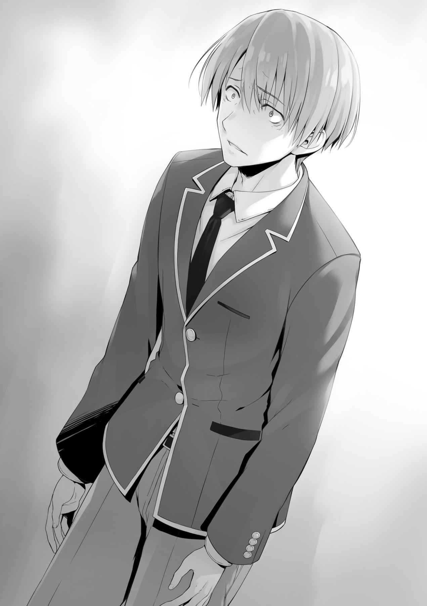

○
僕にとって、クラスの友達はとても大切な存在だ。
……いや、それは少し違う、か。
僕にとって、大切なのはクラスなんだ。
妙な矛盾を
大切な友達を守るために、クラスを守る。
クラスが守られれば友達が守られる。
クラスとは何十人という生徒が一つに集まった組のこと。
人の数だけ考えがあり、ちょっとしたことで
だから僕が守らなきゃいけない。
いつしか僕にとって、僕という存在にとって、クラスを守ることが命題になった。
だけど───それは、本当の、本来の僕じゃない。
僕は元々、クラスの中心的存在ではなかった。
どちらかというと日陰の存在だった。
Ｃクラスで言えば、
だから僕は、たまに彼を昔の僕と重ねていた。
でも僕は変わった。
あの事件が起きて、変わらざるを得なかったんだ……。
幼い頃から、とても仲のよかった友達がいた。
幼稚園から中学校まで、クラスもずっと同じだった友達。
その友達が僕の知らないところで
いや、生きていたのは単なる偶然。
死んでいてもおかしくはなかった。
あの日。
あの日から僕の運命は変わり始めた。
どうすれば虐めはなくなるのかを考えるようになった。
だけど僕は失敗した。
間違ったやり方で、クラスを押さえつけた。
クラス内での争いは消えたけど、同時に笑顔も消え去った。
そして今、僕の目の前で再び同じことが起ころうとしている。
同じ過ちを繰り返すわけにはいかない。
こんな僕が
唯一、クラスを守ることが出来る方法。
それは───
目の前に広がるのは、驚いた顔を見せるクラスメイトたち。
「
知性の
粗野で乱暴な、僕の言葉。
発せられる声は、怒りとも悲しみとも違う。
関係ない。
もう、こうなったら関係ないんだ。

最悪の特別試験が終わりかけた時。
僕は、僕は───